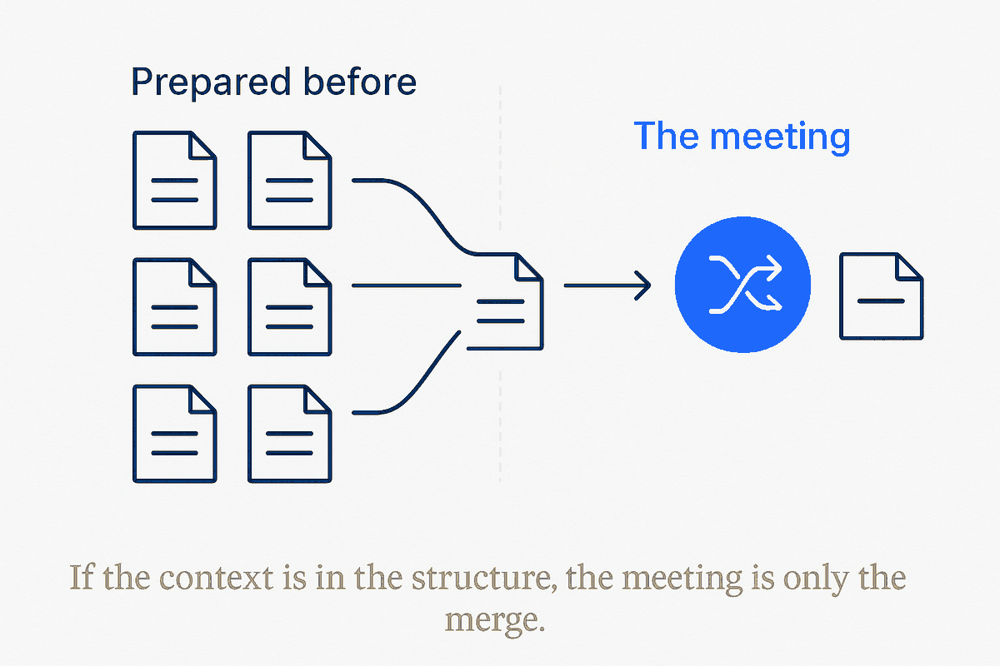

Structure carries the context, so the meeting is only where prepared work merges.

In a structure-driven team, each person's AI assistant has already analysed the underlying data, rules and facts and prepared what to discuss and decide. The synchronous meeting stops being for status or catch-up and becomes the merge of pre-vetted contributions, reserved for judgement and decision. A borrowed word from version control turned into an operating-model metaphor.
Most meetings are expensive context-transfer. People assemble to say out loud what a document could have said, because the context lives in heads and heads only transfer synchronously. Remove that constraint — put the context in shared structure — and the reason for most of the meeting disappears.
What's left is the part that genuinely needs humans in a room: the conflicts. Where two prepared positions disagree, where a trade-off must be weighed, where someone has to decide. That's a merge — and merges are short, because everything that didn't conflict was already resolved before anyone showed up.